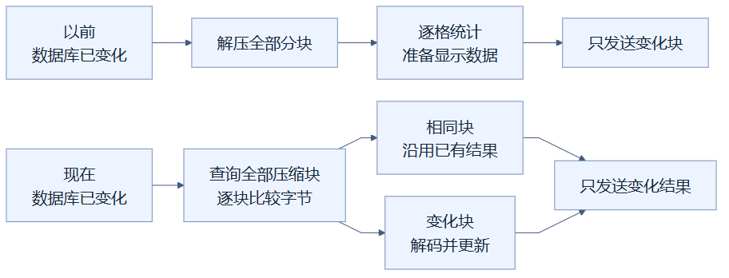
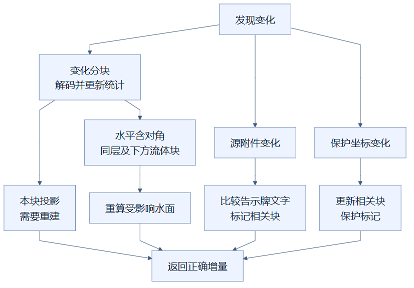

12 · 数据库变了，只拆开真正变化的分块
已采用。 改一格以后，后台仍会核对全部压缩分块，但只把内容变化的分块解压成方块，再更新相关显示数据。邻居受影响的水面、告示牌文字和保护标记，也一起正确更新。
这是上一章的下一步：上一章解决“完全没变”；这一章解决“变了一点”。它没有把检查全部分块省掉，而是省掉大量逐格解压、统计和显示数据重建。
像核对货箱，却只打开被换过的箱子
项目把空间分成 16×16×16 格的分块，每块最多容纳 4,096 个坐标。数据库把分块内容压缩保存。可以想象仓库有很多封好的货箱：核对箱子外面的记录，比拆箱、取出每件货、重新登记省力。
这里的比喻需要修正一点：代码比较的是每箱保存的压缩字节，不是一个能识别变化的贴纸。BLOB 指数据库里的一段二进制数据，里面装着压缩后的方块、分组等内容。数据库变化后，程序查询所有分块的 BLOB，与缓存逐块比较；相同的沿用，不同的才解码，也就是解压并还原成能查询的方块对象。

这张图怎样读：旧路线和新路线最后都只发送变化内容，区别发生在发送之前。新路线先比较全部压缩块，把相同块分到“沿用”分支、变化块分到“解码”分支，因此省下的是拆开大量未变分块的工作。
以前“只发送变化块”已经减少了传输，却仍先做全场景的后台计算。现在把后台准备过程也变成局部工作。投影在这里指从正式场景派生的显示数据，包括方块坐标、模型编号和保护标记，不是修改正式方块。
为什么还必须更新邻居
假设 A、B、C 三块已经缓存。你只替换 B 中的一格石头，A 和 C 的压缩数据不变，它们的方块对象与统计继续使用。B 重新解码，更新自己的统计与投影。摘要会合并各块的统计，因此可以得到全建筑的正确方块数；不是再次数每个方块。
但水面取决于周围格子。水格位于 (15,15,15)，旁边的水位或 (16,16,16) 的水发生变化时，原水格的表面高度也可能变化。虽然原水格所在分块的 BLOB 没变，它的显示模型仍要重建。
代码因此检查变化分块周围的水平邻块，包括对角方向，以及同一高度和下方的流体分块。之所以是下方，是因为水格模型还会采样上方一层：上面改了，下面的水面可能受影响。邻块通常只重建投影，已有方块对象仍可沿用。

这张图怎样读：左侧分块路线表示改方块既要更新本块，也可能影响旁边和下方的水面；右侧两条路线处理文字附件和保护坐标。三种变化来源可以分别出现，也可以同时出现，最后把所有受影响的显示结果合在一起返回。
告示牌文字来自保留的蓝图附件，不只来自方块状态。附件变化时比较新旧文字，更新涉及的分块；保护坐标变化时也更新相关投影。资源包更换则会重建所需模型，并把资源哈希加入分块传输版本，确保浏览器不会继续使用旧资源。
测量该怎样理解
100,000 格场景的独立后台实验中，修改 100 格和 1,000 格后的增量准备分别约 30.87、31.91 ms，各只解码并重建 6 块。这组数据说明成本与触及的分块有关：一百格散落很多块，可能比一千格集中在几块更费力。
它不是网页点击到完成的总时间，也不是所有模型都一样快。首次建立缓存仍要全量解码；数据库变化后仍要读取、比较所有压缩块。缓存总格数限制和共享锁的等待代价也仍存在，详见上一章。
实现见 分块缓存、水面模型和 分块投影；证据见 优化实验记录。
读懂自检
改一格，数据库是否只查询一个分块？答案：不是，仍查询全部压缩块，只解码真正变化的块。
本块数据没变，水面就一定不用重建吗？答案：不一定，上方或水平邻居变化也可能影响水面。
查看本篇 Markdown · 图示为机制示意，实测以实验记录为准。